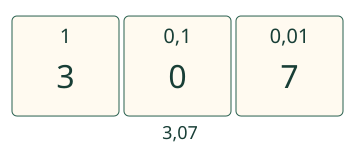
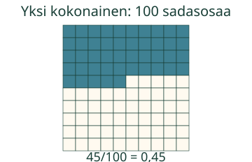
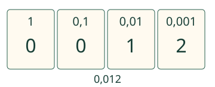

Loikka haluaa kertoa luvun toiselle tarkasti.
Luen luvun niin, että osien koko säilyy.
Miten luvun merkitys kerrotaan?
3,7 ja 3,07 ovat eri luvut
Yksi nauha on kokonainen. Kymmenesosa on yksi sen kymmenestä yhtä suuresta osasta; sadasosa on yksi sadasta. 3,7 voidaan lukea kolme kokonaista ja seitsemän kymmenesosaa. Luvussa 3,07 kymmenesosien kohdalla on 0. Sen lukutapa on kolme kokonaista ja seitsemän sadasosaa.

Pilkun jälkeiset numerot yhtenä lukuna
2,45 on kaksi kokonaista ja neljäkymmentäviisi sadasosaa. Myös kaksi kokonaista, neljä kymmenesosaa ja viisi sadasosaa kuvaa saman määrän. Alla oleva ruudukko esittää vain murto-osaa 0,45; kaksi kokonaista ei sisälly siihen.

Tuhannesosat ja loppunollat
0,012 on nolla kokonaista ja kaksitoista tuhannesosaa. Viimeinen kirjoitettu paikka voi antaa osien nimen. Mutta 3,500 = 3,5, joten sekä kolme kokonaista ja viisisataa tuhannesosaa että kolme kokonaista ja viisi kymmenesosaa ovat oikein.

Ennakoi: luetaanko 0,04 samaksi kuin 0,4?
Katso perustelu
Nimi on tärkeä: neljä sadasosaa on eri määrä kuin neljä kymmenesosaa.
Rakenna lukemasi merkitys
Tarkistus näkee rakentamasi merkityksen. Se ei kuule eikä arvioi ääneen lukemistasi.
Lisää tutkittavaa: hintalappu
4,05€ luetaan neljä euroa ja viisi senttiä. Euro on kokonainen ja sentti sadasosa eurosta. Se ei ole 4,50€, jossa senttejä olisi 50. Aikuinen voi lukea luvun tai voit tutkia tekstin itse.
Opettajalle ja ilman ruutua
Luokat 3–6. Rooli process säilyy. AND-esitiedot M-DEC-01, M-DEC-02 ja M-DEC-03. Numeerinen kokonaisosa+osien määrä+nimen valinta on merkityksen rakentamista, ei itsenäisen suullisen lukuprosessin sertifiointi.
Kirjoita 3,07 paperille ja anna toisen esittää sen merkitys korteilla tai omalla kirjoituksella. Puhe, nimeäminen ja kuuntelu ovat valinnaisia. Voit pyytää selityksen erikseen, mutta älä tulkitse ruudun hyväksyntää sellaisen selityksen havainnoksi.
Oikea arvo sallitaan vaihtoehtoisella osien nimellä: esimerkiksi 70 tuhannesosaa =7 sadasosaa. Käyttöliittymän lyhyt kolmiosainen rakenne ei tarkista kaikkia suomalaisia lukutapoja tai kielioppia. Tuettu lukualue on 0–9,999 eli enintään tuhannesosat ja yksi kokonaisosan numero. Numeroiden paikkataulukko ei ole mitattu pinta-ala tai fyysinen mittaus. Paikallinen tarkistus koskee vain nykyistä vastausta. Malli ja vihje ovat tukea; ne eivät osoita itsenäistä, viivästettyä tai formaalia hallintaa. Ei aikarajaa, puhe- tai esineiden nimeämispakkoa, tallennusta tai henkilöhistoriaa.
Lopuksi: Miten kertoisit luvun 0,050 kahdella oikealla tavalla? Miksi 0,005 ei ole sama?